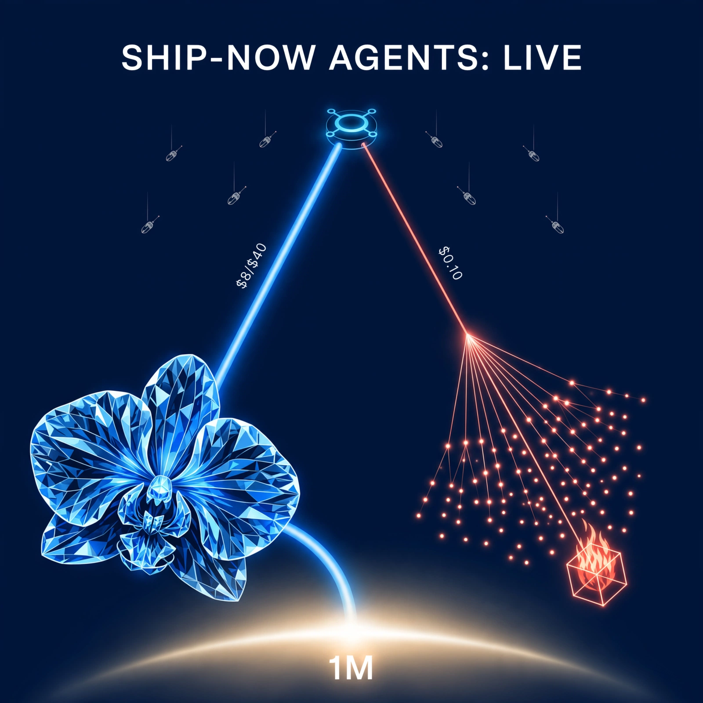

[845]
OpenRouter serves `anthropic/claude-fable-5.2` live at $8/$40 per M [unverified], 1M context, 128K output [announced-live]
Daily digest

Watch [824][825] — fetch: Anthropic Fable/Mythos announcement + docs — claimed-live dual-profile + Mythos vetting, no primary in items.
Watch [826] — need primary URL: fetch Claude Code release notes for v2.1.321 — versioned default-model claim pending changelog.
Fetch [843][844][838][839] — primary artifacts pending: HF repos + licenses, vendor posts, OpenRouter/catalog listings — need dated primary before firm fact.
Rejected [827] — duplicate launch-day availability, single source.
Rejected [828] — single-source gadget, no live product page.
Rejected [829] — single-source governance post, no primary link.
Rejected [830] — single-source marketplace claim, need AWS listing.
Rejected [831] — single-source docs summary, no primary docs link.
Rejected [832] — duplicate Ember launch, covered by live listing [846].
Rejected [833] — duplicate pricing detail, covered by [846].
Rejected [834] — preview distribution expansion, no capability change.
Rejected [835] — analyst take on vendor table, not independent measurement.
Rejected [840] — thin catalog pricing, no technical detail.
Rejected [841] — [no date] [single source] quant roundup.
Rejected [842] — [older] Aug 14 post-training analysis, context not news.
[843][844] deserved no further analysis pending HF/license fetch; numbers [unverified].
[838][839] deserved no further analysis pending repo/license fetch; thresholds noted only as bearish vector.